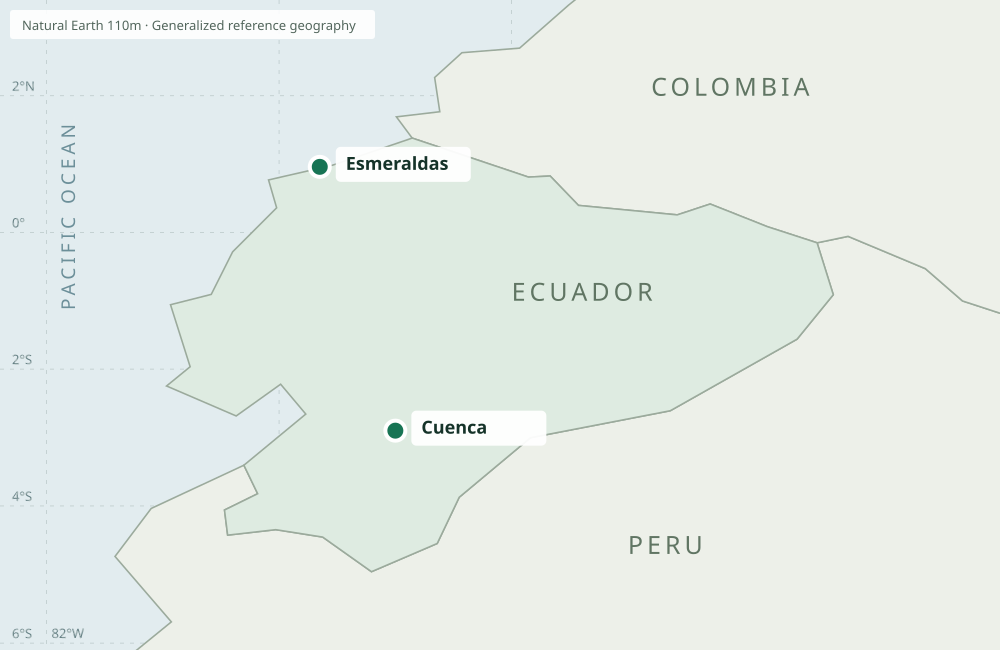

RECORD MEAN
—Selected sample cell · Annual record
Ecuador · Esmeraldas & Cuenca · NASA POWER / MERRA-2
Selected sample cell · Annual record
95% nominal confidence interval: waiting for data
2001–2025 · Selected location
0.5° latitude × 0.625° longitude · Approx.

Markers locate requested samples. Values describe broad reanalysis grid cells; they are not city-wide averages or local sensor readings.
Explore annual variation and estimated change across the historical record.
Annual values · NASA POWER / MERRA-2 · Gridded model-derived estimates
2001–2025NASA POWER historical data · No simulated observations · Educational, exploratory analysis
NASA POWER Monthly API, based on MERRA-2 reanalysis. Two requested sample coordinates near Esmeraldas and Cuenca, 2001–2025. Precipitation is an annual average daily rate in mm/day, not an annual total.
NASA POWER documentation ↗Ordinary least squares estimates linear change per decade. Nominal 95% intervals use Student’s t with n − 2 degrees of freedom and assume independent, constant-variance errors. Serial correlation is not corrected.
Source & reproducibility ↗The 0.5° × 0.625° grid is about 56 × 70 km near the equator. Samples are not city or province averages. Four exploratory location–variable comparisons; no multiple-comparison adjustment. Time windows affect the estimate.
Cartography provenance ↗